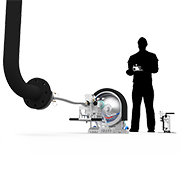
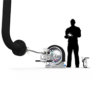
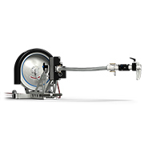
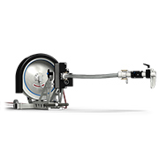
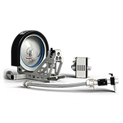
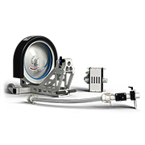
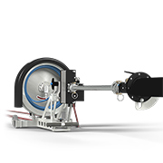
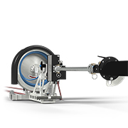

 

 

 

Navigator
The StoneAge Navigator is a portable Rotary Hose Device (RHD) designed for cleaning small pipes with bends. The hose rotation enables access through multiple elbows and makes the Navigator ideal for cleaning process piping, drain lines, and other small ID pipes with bends.
- Lightweight, modular design allows a single operator to move, setup and run
- Controlled rotation of the hose allows the nozzle to pass bends in small 2–4 in. pipe
- Can hold up to 115 ft (35 m) of hose for 100 ft (30.5 m) of reach
- Adjustable feed rate to customize dwell time
- Snout simplifies attaching to pipes and increases safety
| Tool Family | Navigator | |
|---|---|---|
| Tool Model | Nav-100 | |
| Maximum Pressure | 20k psi | 1400 bar |
| Poly Hose Size | 4, 5, and 6mm | |
| Usable Hose Length | 100 ft | 30.48 m |
| Weight Complete | 85 lbs | 38.5 kg |
Navigator NAV-100 Prototype
Navigator Training
Our expert staff is available Monday through Friday 8AM - 5PM MST to answer questions and offer advice on your toughest cleaning applications.